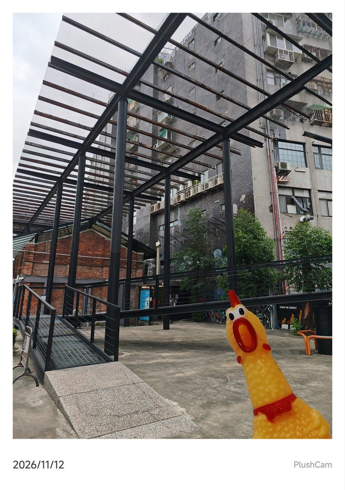
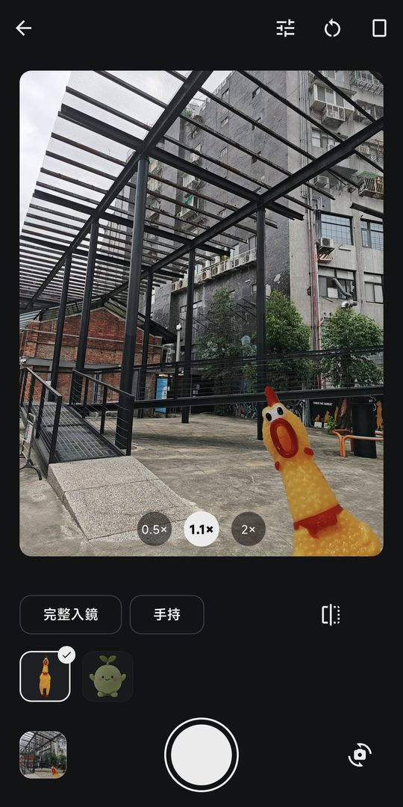

玩偶拍照PlushCam
太寶貝的娃娃捨不得帶出門？怕弄髒、怕弄丟，就算裝進透明娃包也還是擔心。在家把它拍一次，娃娃安心留在家，照片裡一樣有它。
太寶貝的娃娃捨不得帶出門？怕弄髒、怕弄丟，就算裝進透明娃包也還是擔心。在家把它拍一次，娃娃安心留在家，照片裡一樣有它。


娃娃是你的寶貝。
出門想帶它一起拍照，又怕弄髒、怕弄丟；就算裝進透明娃包掛在身上，一路上還是忍不住擔心。
PlushCam 讓你先在家把娃娃拍好。之後不管走到哪裡，打開相機，它就在畫面裡。娃娃安心留在家，照片裡一樣有它。
太大帶不走、今天剛好忘了帶，也一樣可以。
手持
像平常一樣把玩偶舉在鏡頭前，下半身在畫面外，看起來就像真的拿在手上。
完整入鏡
玩偶整隻站在景物前，腳下有淡淡的影子，像真的放在地上或桌上。
兩種都能一鍵套用，也可以自己拖曳，在兩者之間自由調整。
當下沒想到？從相簿選一張以前拍的風景照，把玩偶放上去就好，照片以高解析度儲存。
免費試拍 3 張，照片角落會有小小的 PlushCam 浮水印。之後一次買斷終身會員，就能不限張數儲存、沒有浮水印、不限數量的玩偶，還能備份帶到新手機。無廣告、無訂閱。
不用註冊、不用登入。玩偶和照片都只存在你的手機裡，去背也是在手機上完成。
還沒拍自己的玩偶？App 內建一隻原創小物「小芽」，可以先拿它試試看。